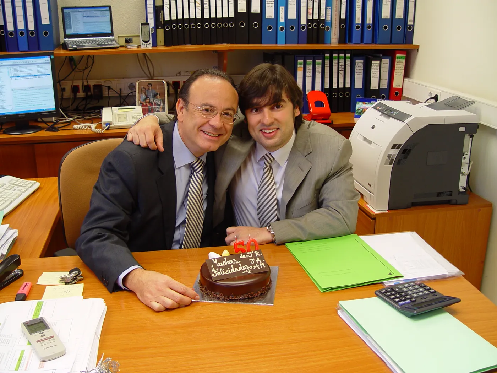
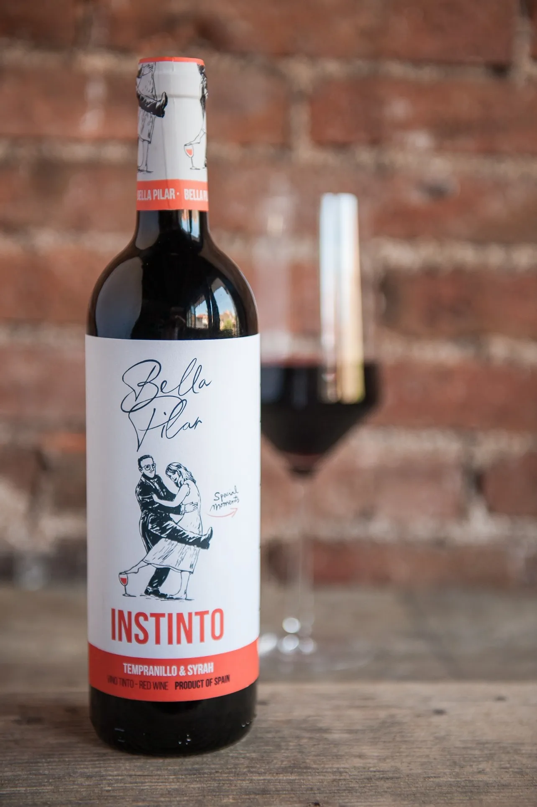

Tengo un máster en marketing y estudios en EAE, IESE y EADA. Me han servido mucho. Pero si alguien me pregunta dónde aprendí de verdad a dirigir una empresa, la respuesta no está en ningún diploma. Está en casa.
Mi padre venía de la gran industria farmacéutica, donde llegó a ser director general. Conocía por dentro cómo funcionan los gigantes, y por eso sabía cómo plantarles cara. En Sedifa y en Grufarma nos lo repetía una y otra vez: “Si queremos hacernos un hueco frente a las multinacionales, tenemos que decidir y actuar más rápido que ellas. Esa es nuestra ventaja.” No era una frase para la pared. Era la forma de trabajar de cada día.

Siempre fue por delante con la tecnología. En 1985, cuando el sector aún funcionaba con papel y teléfono, implantó el primer robot de la distribución farmacéutica en España, y las revistas del sector lo contaron. Era el primero en llegar y el último en irse, porque creía que el ejemplo no se predica: se da. Y era detallista hasta el extremo. Le he visto revisar un almacén, una ruta o un contrato línea por línea, porque decía que los detalles no son detalles: son la diferencia entre hacerlo bien y hacerlo casi bien.
Los detalles no son detalles: son la diferencia entre hacerlo bien y hacerlo casi bien.
A su lado aprendí a sentarme con un banco, a negociar con un proveedor y a tomar decisiones difíciles sin perder la calma. Me contrató, pero no me regaló nada: me lo enseñó todo. Ese ha sido mi verdadero doctorado.
Y nada de eso habría sido posible sin mi madre.
Se llama Pilar, y nunca un nombre fue tan exacto. Es el pilar. Fue la socia de mi padre en todo: en cada decisión importante, en cada riesgo y en cada apuesta. Las empresas fueron tan suyas como de él. Y de ella aprendí lo que no se enseña en ninguna escuela de negocios: que la palabra dada se cumple, que a las personas se las trata bien siempre, y que antes que buen profesional hay que ser buena persona.
Por eso, años después, cuando creé mi propia marca de vino, no tuve dudas con el nombre. La llamé Bella Pilar. En su etiqueta aparecen ellos dos bailando el día de su boda, con mi madre descalza porque le dolían los zapatos. Así es ella: natural, sin artificios. Por eso Bella Pilar es un vino natural, como ella. Fue mi forma de darles las gracias sin decir nada.
Hoy quiero decirlo en voz alta. Todo lo que vais a encontrar en esta web, cada empresa, cada idea y cada versión, empieza en ellos dos.
Gracias, papá. Gracias, mamá.

— Víctor